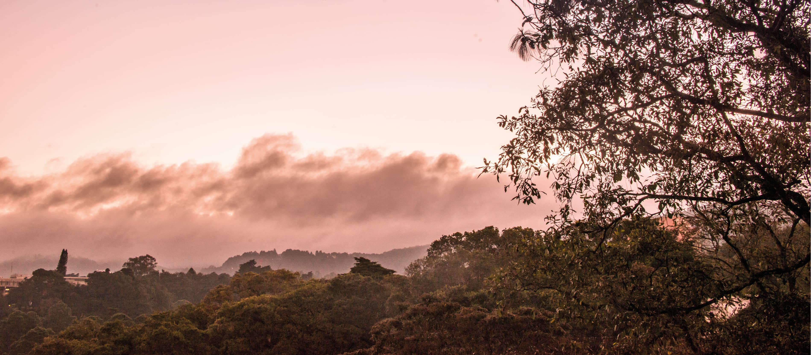
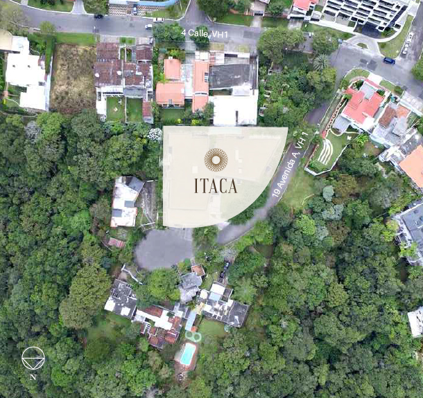

Donde quiero estar
La ubicación del terreno en uno de los sectores más tranquilos de la zona, es una de las fortalezas del proyecto,
pues cuenta con amplias calles y banquetas arboladas en un ambiente tranquilo por la poca densidad vehicular y de vivienda.
pues cuenta con amplias calles y banquetas arboladas en un ambiente tranquilo por la poca densidad vehicular y de vivienda.

ENTORNO
Vista Hermosa se ha convertido en uno de los puntos de mayor plusvalía por su cercanía a servicios, comercios, restaurantes y entretenimiento. El área es el punto medio entre las zonas 10, 14 y 16 y Carretera a El Salvador.
La topografía y el amplio frente del terreno aseguran un entorno con aire puro, tranquilidad y vistas hacia las veredas naturales. El parque ecológico Biotopo de la Ardilla se encuentra frente a ITACA, por eso se ha conservado en lo posible la naturaleza propia del lugar, preservando dentro del diseño arquitectónico árboles preexistentes de gran altura.
La topografía y el amplio frente del terreno aseguran un entorno con aire puro, tranquilidad y vistas hacia las veredas naturales. El parque ecológico Biotopo de la Ardilla se encuentra frente a ITACA, por eso se ha conservado en lo posible la naturaleza propia del lugar, preservando dentro del diseño arquitectónico árboles preexistentes de gran altura.